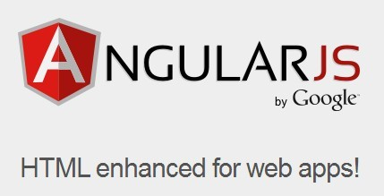
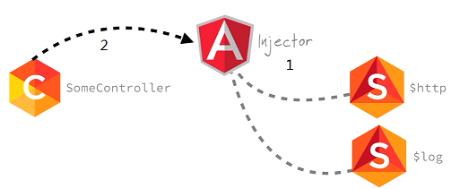

Date with AngularJs
@ Kenny
Agenda - By this ... #% $%@ #&%^ &#$... way ...
- Who is AngularJs?
- First look at AngularJs.
- Get closer to AngularJs.
- Interested in AngularJs.
- Fall in LOVE with AngularJs.
- Fascinated with angularjs.
- Time to say YES?
- Enjoy your life and Looking forward to the future.
Who is AngularJs?
WEB的实时&动态化
交互的需要，多页面 WEB 应用程序通过组装和拼接服务器上的数据来创造它们的HTML ，然后将完成的页面输送给浏览器。ASP.NET富客户端的兴起
后来随着交互的发展，富客户端/单页面应用逐渐兴起，Web Services & XML的广泛使用，使得Flex / SilverLight都有过短暂辉煌， 因为Asp.net是事件驱动，这些框架都是为消息驱动而生的，但是也由于各自的局限性，逐渐式微。Who is AngularJs?
动态web应用
异步操作提升用户体验 那么，什么又是呢？与传统web系统相区别，web应用能为用户提供丰富的操作，能够随用户操作不断更新视图而不进行url跳转。 但是数据交互和用户体验的要求越来越高，有一项古老的技术Ajax焕发新生，异步的数据交互是得对dom操作更加频繁， 这个时候交互工具jQuery对DOM便捷的操作，Ajax的完美支持和浏览器兼容方面的优化迅速抢了头条。jQuery的亮点：
- 选择器支持CSS3的大量选择符，定位元素轻而易举，合理的编码可以使html与js, css分离开，便于维护。
- 灵活便捷的Ajax请求和回调操作。
- 事件绑定功能，内部封装了很多事件，方便统一添加事件，提高了复用性和可维护性。
- 它也封装了很多常用的操作，例如节点的添加删除、常用的动画效果、逻辑判断比较等等。避免了直接使用dom api进行繁琐的操作。
- 本身提供了可扩展的函数，可以自己编写插件与核心jQuery对象进行集成使用。只要你理解js面向对象编程，熟悉jQuery API，就能写出很多定制的插件，复用在各种地方。
Who is AngularJs?
前端的独立化
与此同时，Restful & JSON等技术的兴起，以及前端标准的更新（其实都是浏览器厂商竞争惹得祸），都极大的推动了web前端的独立化。服务器传递模板和数据到浏览器然后在端组装, 服务器的角色变成了只提供模板的静态资源和提供模板所需要的数据。前端框架的发展
大型web应用和交互需求催生前端框架的发展，前端框架大大丰富，Dojo 、Prototype 、Jquery 、mootools 、AngularJS、Prototype 、Ember、ExtJS 、Knockout、YUI ......Who is AngularJs?
前端的挑战
内容型网页的响应式设计，混合式APP的发展对前端开发工作从表现层设计到代码结构上都提出了新的挑战：- 从技术角度：浏览器兼容性、通用组件、W3C标准
- 从管理角度：JS规范、CSS规范、DHtml/DOM规范
- 从设计角度：交互与用户体验分析及创新
这些挑战中，JS规范与表现层的代码结构为甚，因为前端技术中最重要的一环 JavaScript 却缺少一个标准的模块化系统 ：
-- 有些基础库会把所有模块打包成一个文件，如jQuery，
-- 另一些大型库都有自己的模块系统，但代码不能通用 ，如 ExtJS, 几乎每个流行框架都有一套自己的 DOM wrapper...
Who is AngularJs?
"Hello World" by jquery-tmpl (https://github.com/BorisMoore/jquery-tmpl) :
// Defined a HTML view, and Compile the markup view as a named template var markup = "
//the View may like this : <ul id="helloList" style="... ..."><ul>
//And the functions :
$("#helloList").each(... ...);
Who is AngularJs?
Question :
如何像以前那样的保持声明事件的可读性，有利于分工？同时保持事件操作的便捷？保证模块化？让MVC不仅体现在代码结构上，更体现在专业分工上？<ul sayHelloToAllNames> ... </ul>
<ul sayHello Names repeat_li> <li>Hello #Names[index] goes here# !</li> </ul>
<ul sayHello Names repeat_li> <li click="viewDetail">Hello #Names[index] goes here# !</li> </ul>
<Names> < repeat_name click="viewDetail">Hello #Names[index] goes here# !</repeat_name> </Names>
Who is AngularJs?
看起来似乎我们只需要让浏览器能够识别新的标签和语法就OK啦。我们也许会联想到HTML的自定义属性和标签，可是静态的HTML能够为这些属性标签添加除了样式之外的其他行为么？
Let's have a try with ...
Sample Data :
[{"name": "Tom","description": "This is Tom ..."},{"name": "Emma","description": "Emma is short for AYAMAYA ..."}]
How will this going?
Who is AngularJs?
So AngularJs is ... ...
AngularJS is an MV* framework that is ideal for use when building client-side single-page apps. It is not a library, but a framework for building dynamic web pages. It focuses on extending HTML and providing dynamic data binding, and it plays well with other frameworks (e.g., jQuery).
1，TA是一个框架，不是类库。
2，TA是Google推出Web应用开发框架，构建了一个MVC/MVVM的解决方案用于客户端动态web应用。
3，TA的核心是对HTML的扩展增强，并实现动态的数据绑定。
4，TA能够兼容其他的前端框架，如jQuery。
见个面吧。。。
Part1
First look at AngularJs
About AngularJs
回到刚才的示例：
[{"name": "Tom","description": "This is Tom ..."},{"name": "Emma","description": "Emma is short for AYAMAYA ..."}]
- 那“ng-app, ng-controller, ng-repeat, ng-click”这些又是什么？
- 那个双括号又是怎么把名字读取到的？
- 只有这两段代码能把名称显示出来？
Off course NOT. TA是有内涵的 @_@
About AngularJs
完整示例：
ng-app -- Set the satge for AngularJs
很多应用都有一个用于初始化和启动应用的main/ready方法。AngularJs 作为一个可以高度模块化的框架，不需要main方法，作为替代，TA使用了HTML语言常用的声明式方法，描述应用从哪里如何启动。Module的声明方式
//在js中，我们调用angular对象的module方法来声明一个模块
var app = angular.module("angularDemoModule", []);
Module 的引用
在前面的示例中，在<html>标签上多了一个"ng-app"，它的作用就是用来指定angular的作用域。<html ng-app> //在中添加ng-app属性意味着整个都是AngularJS脚本作用域。
<div ng-app="angularDemoModule">...</div>
Directive -- Let AngularJs show out
什么是Directive？
Directive允许你以声明的方式扩展HTML的标签，Directive是教HTML玩一些新把戏的途径。
var app = angular.module("testDemoModule", []).directive('myNames', function() {
return {
restrict: 'EA',
template :'- This is a fixture data for test!
- This is also a fixture data for test!
将Directive的名称放在属性、标签名、class名里面也可以触发该directive。
Angular自带一组内置的directive，对于建立Web App有很大帮助。比如ngClick...
Directive的命名
Directive有驼峰式（camel cased）的风格的命名，如ngBind（放在属性里貌似用不了~）。但directive也可以支蛇底式的命名（snake case），需要通过:（冒号）、-（减号）或_（下划线）连接。
作为一个可选项，directive可以用“x-”或者“data-”作为前缀，以满足HTML验证需要。
Directive -- Let AngularJs show out
Attribute vs Elements directives
var app = angular.module("testDemoModule", []).directive('myNames', function() {
return {
restrict: 'EA',
template :'- This is a fixture data for test!
- This is also a fixture data for test!
- E - 元素名称： <my-directive></my-directive>
- A - 属性名： <div my-directive=”exp”></div>
- C - class名： <div class=”my-directive:exp;”></div>
- M - 注释 ： <!-- directive: my-directive exp -->
Directive -- Let AngularJs show out
The template
var app = angular.module("testDemoModule", []).directive('myNames', function() {
return {
restrict: 'EA',
template :'- This is a fixture data for test!
- This is also a fixture data for test!
templateUrl - 与template基本一致，但模版通过指定的url进行加载。
replace - 是否用模板的html替换当前标签的html元素( 查看示例):
如果为true，则将模版内容替换当前的HTML元素，并将原来元素的属性、class一并迁移；
如果为false，则将模版元素当作当前元素的子元素处理。
动态的数据是怎么加进来的呢？怎么储存的呢？又是怎么在html中渲染出来的呢？
ng-controller -- Get AngularJs more flexible
MVC in AngularJs
提到动态数据的展示，大家可能立即就会想到MVC的分层结构，因为前面已经叙述过， AngularJs是一个MV*的框架，那么TA也是通过控制器将model中的数据跟View绑在一起吗？Controller的定义
app.controller('helloCtr', function() {
//Logic goes here...
});
<Names class="tag_names" ng-controller="helloCtr"> ... ... <Names>
Controller对Model的引用
app.controller('helloCtr', ['$scope', function($scope) {
$scope.Names= [
{"name": "Tom","description": "This is Tom ..."},
{"name": "Emma","description": "Emma is short for AYAMAYA ..."}
];
}]);
从示例中可以看到，Controller对Model的设定和引用是通过AngualrJs内置的服务$scope来实现的。
ng-controller -- Get AngularJs more flexible
$scope与scope
scope是一个指向应用model的object，被放置于一个类似DOM的层次结构中。controller可以通过$scope服务对其进行访问。 当它被嵌入到独立的应用组件中，可以为View上的表达式求值时提供上下文环境。于是我们就可以在引用了controller的DOM结构中直接访问到scope的数据。How to display the data?
在这个示例中，我们通过在双括号中直接使用了定义在scope中的person这样的类Javascript对象来访问数据。1，person.name这样的类Javascript的代码片段是AngualrJs表达式Expressions的一种。
2，而这个双括号设定了解析表达式的绑定区域。
3，在angular表达式里，我们不能做以下任何的事：条件分支、循环(ng-repeat)、抛出异常。
既然scope是以js对象的方式存在，我们能通过它来传递事件吗？
ng-controller -- Get AngularJs more flexible
Interaction -- Functions in the scope
app.controller('helloCtr', ['$scope', function($scope) {
... ...
//在scope中定义一个function
$scope.viewDetail = function(p){
alert( p.description );
}
}]);

The overall impression of Angular
MV*
再回过头来看看整个Demo的实现，似乎controller并没有太多的业务逻辑， 反而是很多scope数据的处理，更像是ViewModel的实现，这也是为什么AngularJs自我介绍的时候归结为MV*:| Modules | Where our application components live. AngularJS 的根本。 |
| Directives | HTML annotations that trigger Javascript behaviors. HTML中的声明元素，用于促发JS行为。 |
| Controllers | Where we add application behavior. 控制器，起到不同层面间的组织作用。 |
| Views ( Expressions ) | How values get displayed within the page. |
印象挺好，深入交流下，看看TA是否与众不同吧。。。
Part2
Get closer to AngularJs
What makes AngualrJs different?
view是用户所能看到的东西。view诞生于模版，它与model结合，最终呈现为浏览器DOM。 AngularJs采取一个对于其他很多模版系统来说，很不一样的方式去呈现View。一般框架的数据绑定
还记得前面jquery-tmpl 的例子吗？ 和其他许多模版一样，它们通常都是通过建立带有特殊标记的HTML字符串来与数据进行连接，生成最终的HTML字符串，并将结果通过innerHTML属性写入某元素里。
那么AngualrJs又是怎么实现Model和View同步更新和事件绑定的呢？
What makes AngualrJs different?
AngualrJs的解析
Angular模版的不同之处，在于它是基于DOM的而不是基于字符串的。 View与scope model的绑定对我们来说是透明的。 开发者无须为更新视图、model做任何动作。
AngularJs页面的编译分为三个阶段：
1，AngularJs编译器遍历DOM查找HTML中的directives，并会按照优先级排序加入一个指令列表中，并且他们的compile方法会被调用。 directives的$compile()函数能修改DOM结构，并且要负责生成一个链接函数
2，通过调用一步所说的链接函数来将模板与作用域链接起来。这会轮流调用每一个指令的链接函数，让每一个指令都能对DOM注册监听事件，和建立对作用域的的监听。
3，这样最后就形成了作用域的DOM的动态绑定。任何一个作用域的改变都会在DOM上体现出来。
What makes AngualrJs different?
好处 @ 1 ...
Angular的这个处理方式，产生了一个稳定的DOM。这意味着在DOM元素的生命周期里，一直与某model的实例绑定着，这个关系不会发生改变。 这也意味着代码可以保持对某DOM对象的引用，对其注册事件函数，并且这个引用不会被模版数据合并所销毁。更多好处，有待总结 ... ...
Expression -- AngularJS's Language
AngularJs表达式
表达式（Expressions）是类Javascript的代码片段，通常放置在绑定区域中（如｛｛expression｝｝）。@ 1 Property Evaluation
AngularJS的表达式解析环境的上下文是scope，而javascript则是window（严格模式evel的时候）。AngularJS需要通过$window访问global window对象。这样做的用意是避免意外访问了公共属性（global state，a common source of subtle bugs）。
@ 2 Forgiving
表达式求值对undefined和null是宽容的。在javascript中，当a不是object的时候，对a.b.c求值，那么将会抛出一个异常，这对于通用语言来说是合理的。
而表达式求值主要用于数据绑定，一般形式如下：{{a.b.c}}，如果a不存在，没有任何显示。
Expression -- AngularJS's Language
@ 3 No Control Flow and '$'
AngularJs的核心体系是应用的逻辑应当在controller（的scope）里面，而不是在view里面。 如果我们需要在视图表达式中加入条件分支、循环或者抛出异常的话，可以委托javascript方法去代替（可以调用scope中的方法）。AngularJs为了使本身的API名称能够区别于其他的API，使用一个简单的前缀'$'以保留了特定的namespace，防止冲突。
Cool，了解下吧。。。
Filter -- AngularJS's Grammar
在AngularJS，Filter提供了在View端对数据进行筛选以及格式化的途径。AngularJs提供了丰富的内置Filter，同时也提供了用户自定义过滤器的途径。Filter -- AngularJS's Grammar
Build your own filter
@ 1 -- filter the scope using $filter serviceScope -- AngularJS's Memory
前面提到过，scope是被放置于一个类似应用的DOM结构的层次结构中。而在AngualrJs的解析中也提到，每一个Directive都能对DOM注册监听事件。正是scope负责检测model的变化，为表达式的执行提供execution context，传播事件。
scope的特性
- scope提供$watch API，用于监测model的变化。
- scope提供$apply API，在 controller、server、angular event handler 之外，从系统到视图传播任何model的变化。
- scope可以在通过原型，从parent scope中继承属性。
- scope在expression求值之时提供上下文环境。例如，{{username}}表达式是无意义的，除非它与一个特定的定义了”username”属性的scope一起进行求值。
Scope -- AngularJS's Memory
Scope as Data-Model
scope是在应用controller与view之间的纽带。 controller和directive两者都与scope有引用，但它们两者之间没有（引用）。 这样的安排，将controller从directive和DOM中隔离开来。 这是一个重要的地方，因为它让controller与view是隔离的，极大地提升了应用的可测试性。与定义了｛｛greeting｝｝表达式的模版DOM节点一起检索scope。(本例与传递到MyController中的scope是相同的。)
通过之前检索的scope，对greeting表达式进行求值，然后将结果作为封闭DOM元素的text的值。
Scope -- AngularJS's Memory
回顾前面的例子，我们不难发现，有时候我们并没有定义scope。比如那些没有定义Controller的示例中，scope在哪里？scope层次结构
- 每一个angular应用有且只有一个root scope，但可以拥有多个child scope，因为一些directive会创建新的child scope。附加到的DOM的root scope的位置是通过ng-app directive的位置定义的。
- 当新的scope被创建后，他们将作为一个child scope，加入到parent scope中。这样，创建了一个与它们附属的DOM相似的树结构。
- 当angular对{{username}}求值时，它首先查看与当前元素关联的scope的username属性。如果没有找到对应的属性，它将会一直向上搜索parent scope，直到到达root scope。
ng-repeat为Names创建了多个person的child scope。
多个directive使用同样的controller，如何使用独立的scope呢？
Scope -- AngularJS's Memory
isolate scope
Service -- AngularJS's Tools
在前面的例子中，我们几次提到了AngularJs的service，比如$scope，在ng-app加载的过程一直在默默工作。在上面的示例中，当我们新建myTipsCtr时，用参数数组的方式添加了$scope的引用， 在AngularJs中我们称为“依赖注入”，而AngularJs实现依赖注入的方式也是通过$Injector这个服务实现的。 
1，所有的AngularJs服务都是实现为单例模式，并注册在依赖注入系统中。
2，当AngularJs启动时，Controller开始启动构造的时候，通过参数指出依赖。
3，AngularJS的依赖注入系统帮你查找左右依赖，负责实例化，并且按照工场函数要求的样子传递依赖。
Service -- AngularJS's Tools
$http - the communication system
在angularJS中与远程HTTP服务器交互时会用一个非常关键的服务-$http。Click Me -
JUMP OUT HERE
Part3
Interested in AngularJs
Form
File Upload in AngularJS
路由与多视图
Animation
Part4
Fall in LOVE with AngularJs
How AngularJS Starts up in your browser?
HTML编译器——$Compiler
Part5
Fascinated with angularjs
ng运行与指令
Modules and the Injector
Event Loop
AngularJS Runtime -- To $apply, or Not to $apply?
Diving Deep with Dependency Injection
Diving deep into the AngularUI Router
Diving deep into the Angular Filter
The Teams List App: Filtering and Controller Communication
Communicating Between Scopes with $on, $emit, and$broadcast
$Watch , $location,$provide
$resource, $http and promise in AngularJS
Part6
Time to say YES?
Sounds Great!
- 国际范儿——Internationalization
- 时尚百变——Bootstrap
- 紧跟潮流——不断更新扩大兼容Socket.IO
- 个性单纯——想测试，很Easy。。。
- And so on ...
Warnings!
Some thing you should know before get married!代码美化与规范
- Module的推荐设置
- 依赖$injection的顺序
- 隐式依赖注入
- 代码压缩
- Angular Namespace
- IE浏览器兼容性
框架对比
应用架构 / 项目实践
代码组织
注意 ： angularjs的“坑”
Angular 与Require.js
Using jQuery
:D
It's not a big deal ！
we want the the honeymoon
Part7
Enjoy your life and Looking forward to the future
总结
- Angular 编程思想 http://www.oschina.net/translate/the-angular-way?print http://www.zhihu.com/question/21151483 AngularJS 胜在可用和易于测试这两方面。 例如： 使用双大括号{{}}语法进行数据绑定； 使用DOM控制结构来实现迭代或者隐藏DOM片段； 好处： 能将逻辑代码关联到相关的DOM元素上； 能将HTML分组成可重用的组件。
TODO -- 未接之谜
- AngularJs 日志输出 如何对Directive/Service做单元测试？ 如何对AngularJs做测试？
- AngularJ项目代码的组织 如何实现工程化？